実験・現地調査
学生が圃場・ポット実験を計画し、土壌や水の試料を採取し、処理による応答を比較して研究結果を発表する。現在の研究課題は下に示す。
IECL / 研究室
学部生・大学院生は、水土保全と環境の保全・修復に関わる研究課題に、実験・現地調査・分析を通じて取り組んでいる。ゼミでの討論と研究発表を通じて知見を共有し、学外研修では研究対象となる地域や管理の実態に触れる。
01 / 写真
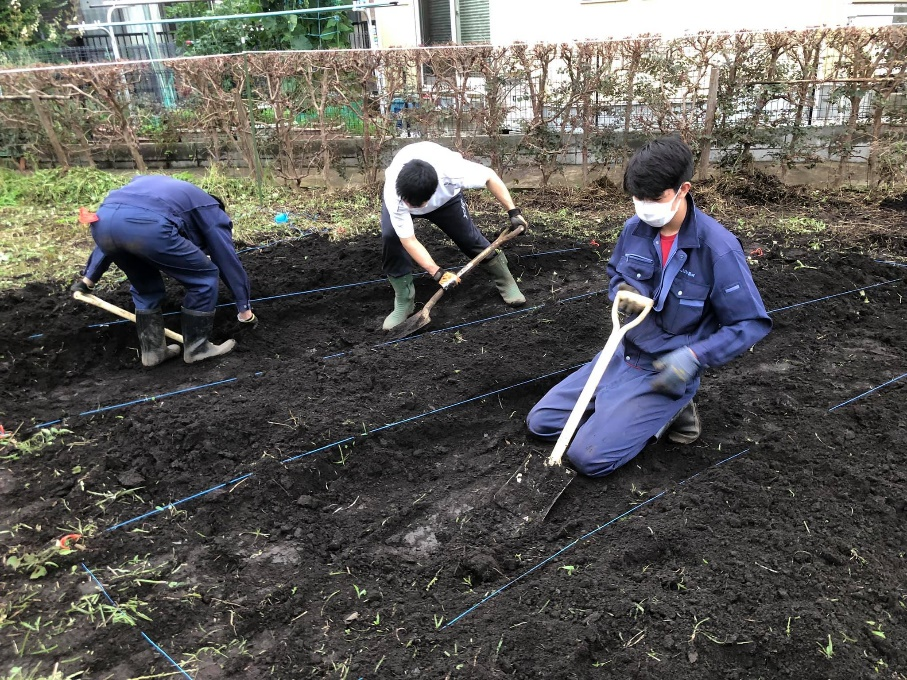
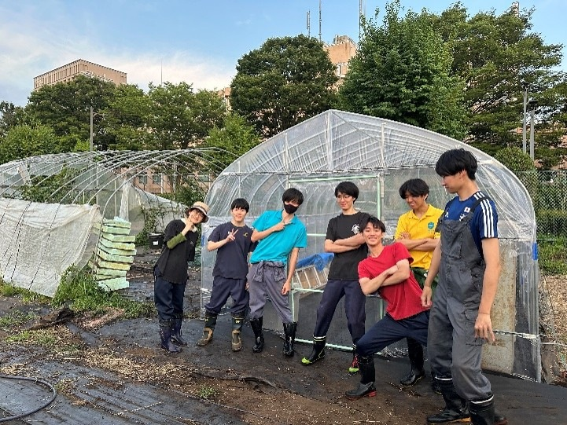
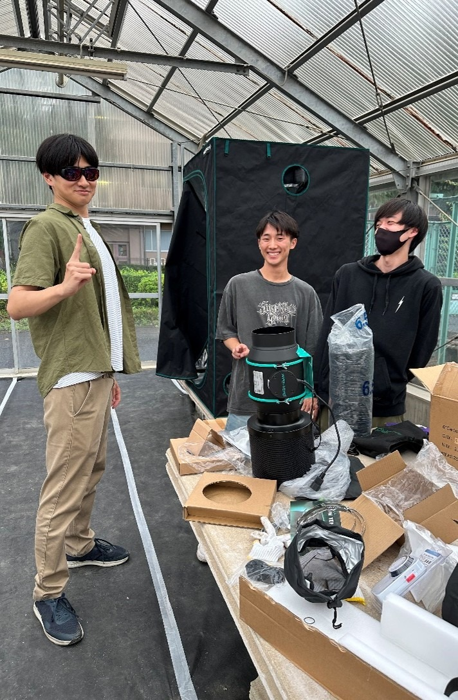
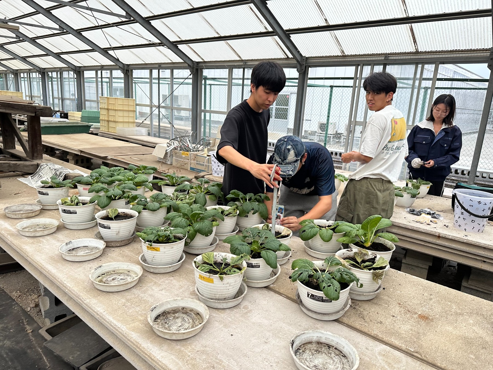
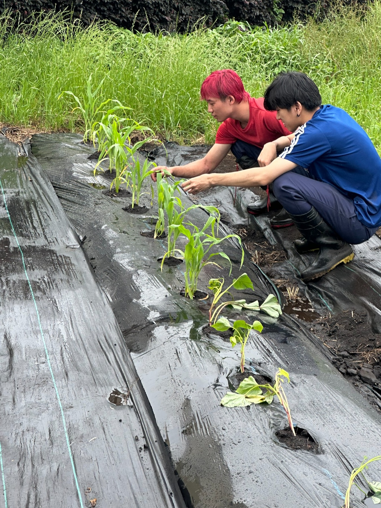
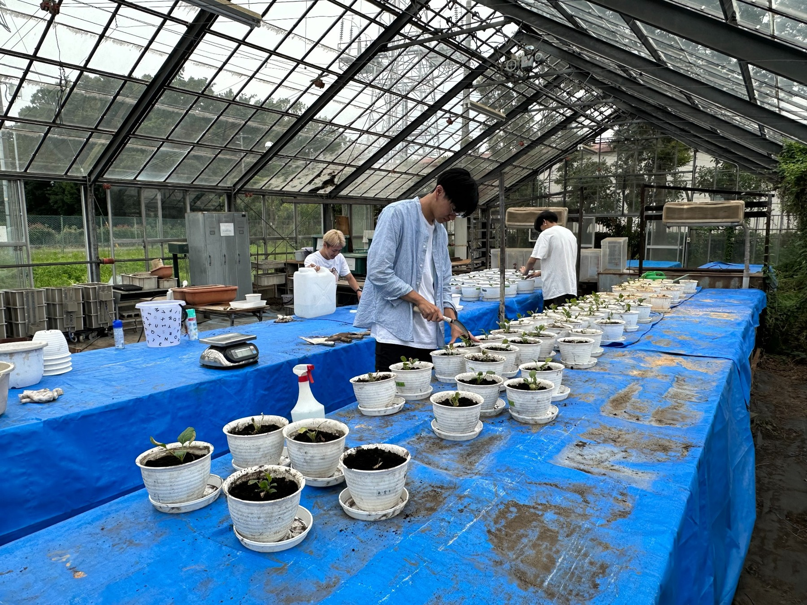
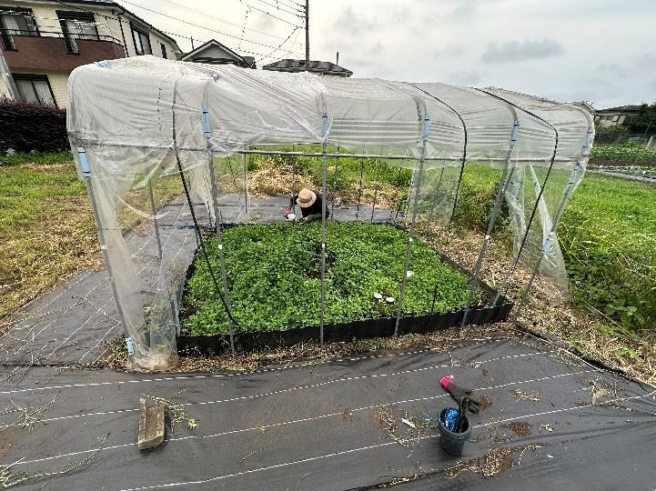
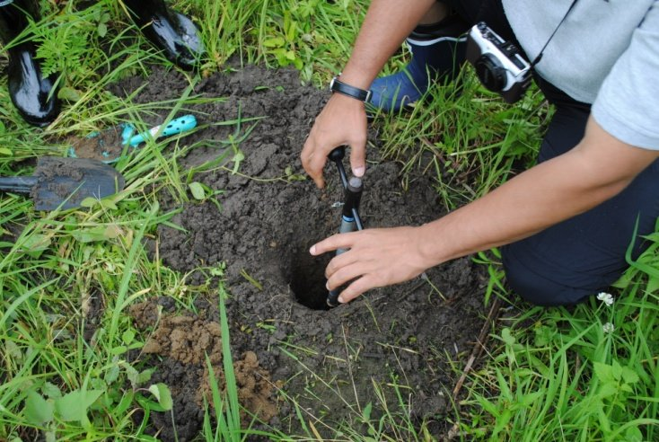
02 / 活動
学生が圃場・ポット実験を計画し、土壌や水の試料を採取し、処理による応答を比較して研究結果を発表する。現在の研究課題は下に示す。
農地や農業農村の施設を訪れ、現地で管理に携わる方々から学ぶ。
学生は卒業研究の発表会や学会で成果を報告し、教員も学会で研究成果を発表する。
03 / 研修と交流
研修講義と現地見学を通じて、農業農村整備や農地管理について学んだ。
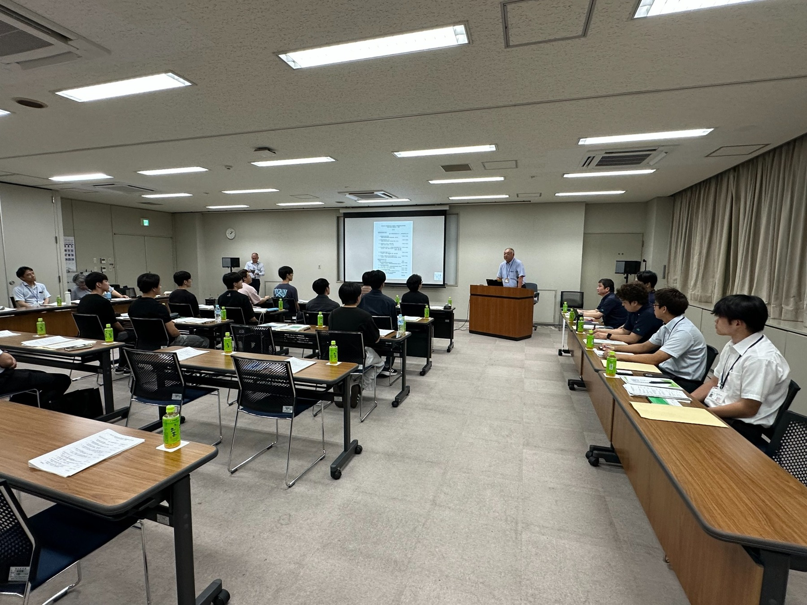
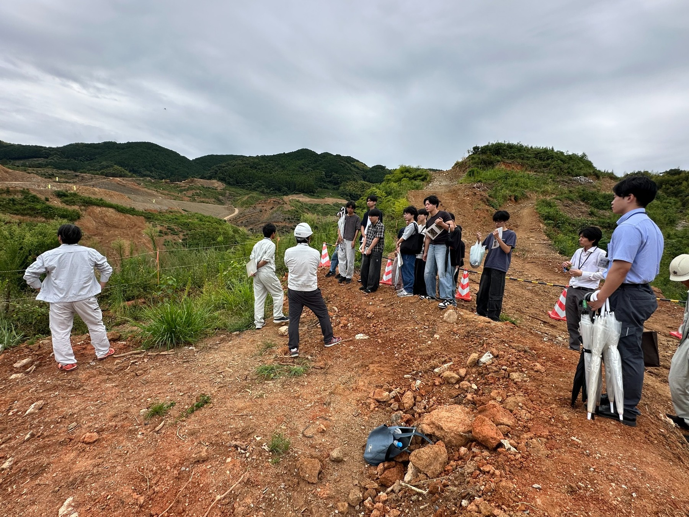
両総用水の施設を訪れ、農業用水を供給する仕組みを学んだ。
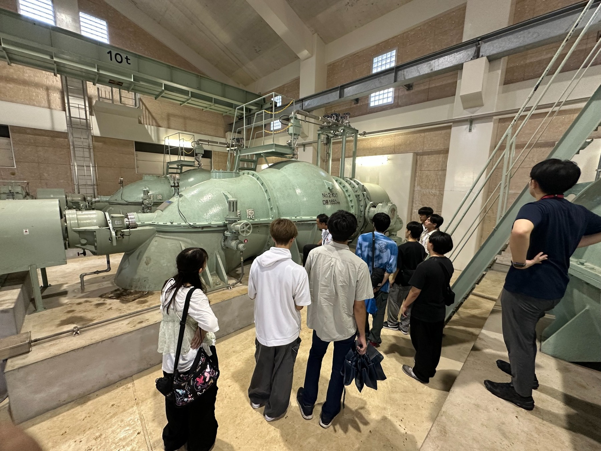
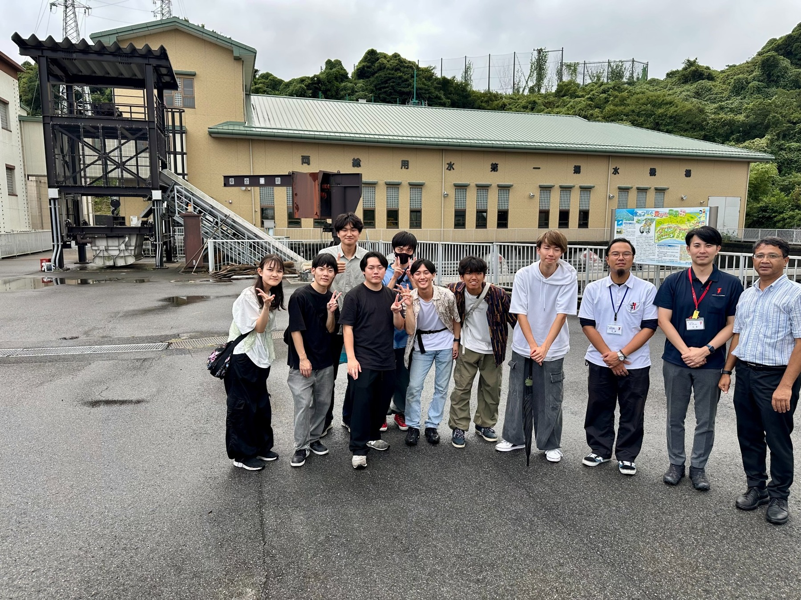
懇親会や卒業生の送別会も行い、学生と教員の交流の機会を設けている。
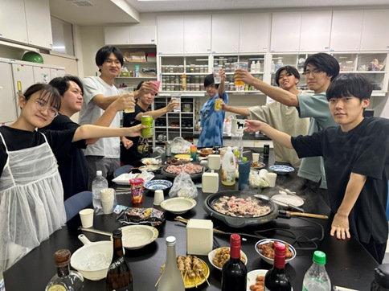
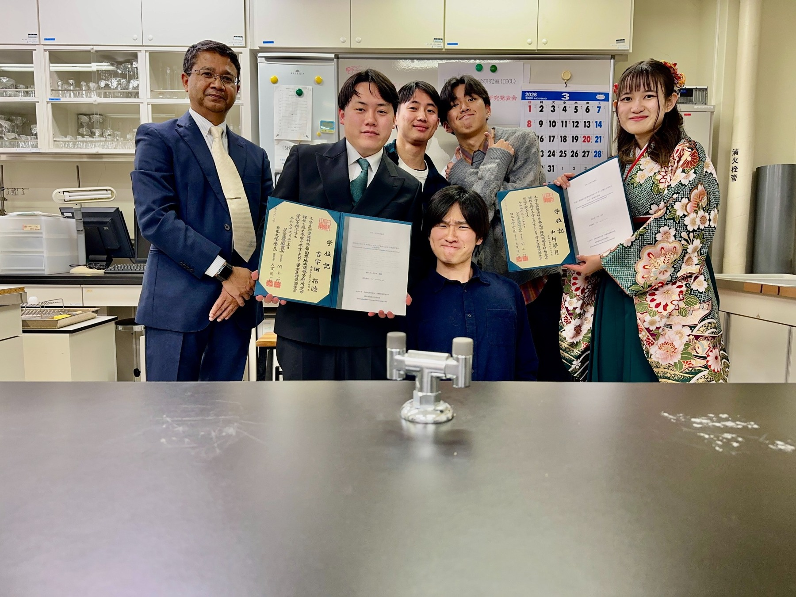
04 / 研究活動
データを集める前に研究の問いを定める。課題に応じて圃場、ポット、土壌・水の試料を用い、測定値を検討し、限界を含めて結論を発表する。
現地
土壌・作物の状態を記録し、水・土壌試料を採取し、圃場内または時間的な変化を測る。
実験
対照区と処理区を設け、問いに応じて土壌水分、pH・EC、植物生育などを測定する。
解析
データの質を確認し、必要に応じて地図・画像情報と照合し、観察結果と不確実性を卒業論文や口頭発表で説明する。
05 / 2026
研究室で現在取り組んでいる課題を紹介する。
加工形態の異なる米由来資材を土壌改良材として比較し、土壌物理環境と生育を調べる。
測定：土壌水分・地温・土壌pH/EC・生育。管理された圃場で作物ごとの土壌水分の変化を比較する。
測定：土壌水分・土壌水分張力・地温。塩類土壌への改良材の効果を植物と浸出水の両方から評価する。
測定：EC・生育・植物体重量・浸出水。異なる土壌で再利用資材が保水性に及ぼす影響を調べる。
測定：土壌水分・ポット重量・水分状態・生育。06 / 研究記録